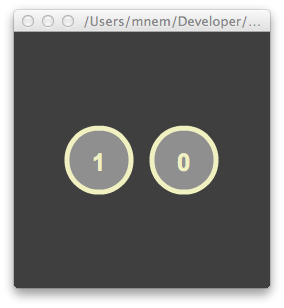
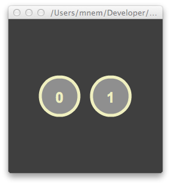

A test of AS compound operators compiled with both legacy and ASC2 compilers.
For some background on this issue, see Compound Operators, New and You.. It appears it still occurs with the new ASC2 compiler.
ActionScript code used to create the circle:
private function addCircle():void {
addChild(new NumberedCircle()).x += 85;
}

Relevant bytecode:
private function addCircle():void
{
// derivedName null
// method_info 3
// max_stack 3
// max_regs 1
// scope_depth 9
// max_scope 10
// code_length 30
bb0
succs=[]
0 getlocal0
1 pushscope
2 findpropstrict addChild
3 findpropstrict NumberedCircle
4 constructprop
5 callproperty
6 findpropstrict addChild
7 findpropstrict NumberedCircle
8 constructprop
9 callproperty
10 getproperty x
11 pushbyte 85
12 add
13 setproperty x
14 returnvoid
}

Relevant bytecode:
private function addCircle():void
{
// derivedName addCircle
// method_info 2
// max_stack 3
// max_regs 1
// scope_depth 0
// max_scope 1
// code_length 31
bb0
succs=[]
0 getlocal0
1 pushscope
2 findpropstrict addChild
3 findpropstrict NumberedCircle
4 constructprop
5 callproperty
6 getproperty x
7 pushbyte 85
8 add
9 findpropstrict addChild
10 findpropstrict NumberedCircle
11 constructprop
12 callproperty
13 swap
14 setproperty x
15 returnvoid
}